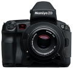

器材库 > 大中画幅可换镜头数码相机 > ZD

规格总览
产品类型
大中画幅可换镜头数码相机
发布日期
2004-09-28
停产
是
影像规格
影像传感器
CCD
影像传感器尺寸
48 x 36mm
总像素
2180万
有效像素
2150万
低通滤镜
选件 (用户可自己更换)
色彩空间
Adobe RGB、 sRGB
静态图像格式
JPEG, RAW, RAW+JPEG
静态图像质量
JPEG：精细、正常、基本
镜头和对焦
镜头卡口
Mamiya 645 AF
对焦系统类型
TTL相位检测
曝光控制
测光模式
中央重点测光, 评价测光, 点测光
快门类型
电子控制，纵走式，焦平面快门
快门速度
1/4000 - 30秒 + B门；闪光同步速度：1/125秒
自动包围曝光
可拍摄：2、3、5幅 (单张或者连续) 可调整： ± 0.3、± 0.5、± 0.7、± 1
连拍
每秒1.5张，最多11张
取景器/显示屏
取景器
眼平五棱取景器, 固定
取景范围
98%
取景放大倍率
0.75倍
LCD类型
低温多晶硅TFT LCD
LCD尺寸
1.8英寸
文件输入/输出
存储卡
CF, SD/SDHC
数据接口
IEEE1394
视频/音频接口
Video 输出 (NTSC/PAL)
机身规格
颜色
黑色
尺寸
162 × 152 × 91mm
重量
1200g
其它
软件
Mamiya Digital Photo Studio
vleepmx2013-09-09 21:204.44 分
操作性 4.00功能性 5.00美观性 4.00趣味性 5.00耐用性 3.50性价比 5.00解像力 4.50色彩还原 4.50
不孤单的北半球2013-05-28 18:004.5 分
操作性 5.00功能性 5.00美观性 5.00趣味性 5.00耐用性 5.00性价比 3.00解像力 3.00色彩还原 5.00
sellfish2008-04-06 21:204.5 分
操作性 4.50功能性 4.00美观性 4.50趣味性 4.00耐用性 4.00性价比 5.00解像力 5.00色彩还原 5.00
kukiliang2007-11-13 15:243.19 分
操作性 3.00功能性 3.00美观性 2.00趣味性 2.50耐用性 4.00性价比 1.00解像力 5.00色彩还原 5.00
ranger0192007-07-12 23:224.38 分
操作性 4.50功能性 4.00美观性 4.50趣味性 4.00耐用性 4.50性价比 4.50解像力 4.50色彩还原 4.50
WZX35482006-05-25 11:305 分
操作性 5.00功能性 5.00美观性 5.00趣味性 5.00耐用性 5.00性价比 5.00解像力 5.00色彩还原 5.00
ck472006-02-09 15:594.88 分
操作性 5.00功能性 5.00美观性 5.00趣味性 4.50耐用性 5.00性价比 4.50解像力 5.00色彩还原 5.00
产品图 / 样片
ZD-03
评测 / 相关文章
- ［试用］被遗忘的玛米亚ZD与飞思P25 （存档）
- ［试用］初试120－被遗忘的玛米亚ZD （存档）
相关文章
- ［试用］被遗忘的玛米亚ZD与飞思P25 （存档）
- ［试用］初试120－被遗忘的玛米亚ZD （存档）